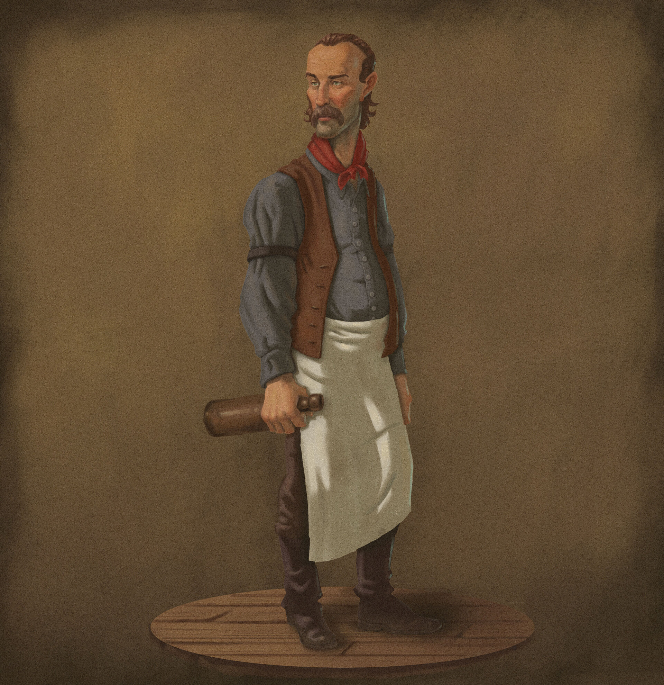

O xerife se aproxima do bar para pedir a voce informaçoes sobre os foras da lei que estavam rodiando a cidade.
faça sua escolha:

- pegar a arma em baixo do balcao e apontar para o Fora da Lei
- manda eles resolverem o problema em um duelo
- pegar a arma em baixo do balcao e apontar para o Xerife